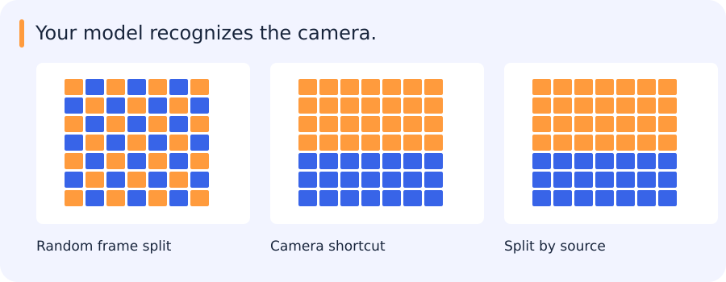

A model is trained on one collection of examples and judged on another. Its score depends on what the collections contain and what they share. Imagine evaluating a motion classifier on videos from cameras it will encounter later. The validation setup needs to make that deployment question explicit before any model comparison can answer it.
Jump to a concept
Three meanings of bias
One optimistic report, three different causes
A vehicle counter predicts about 15 cars on streets where the true count ranges from 3 to 40. If you repeatedly trained the same deliberately simple model and averaged its predictions for a busy street, it might still predict far too few cars. That systematic error is the kind of bias discussed alongside variance.
Now inspect the training images and find that nearly all came from clear days. Predictions at night can fail because the examples you collected underrepresent the conditions you care about. To test this explanation, report day and night results separately and record how many images each group contains.
Finally, suppose your validation set was made by randomly splitting video frames. A model can see nearly identical frames during training and validation. The optimistic score then comes from the measurement procedure. Splitting by recording is a concrete way to remove that particular path for leakage. These failures can coexist, and each suggests changing a different part of the experiment.
The word bias describes several different things in this discussion. A model can have an additive intercept called a bias. An estimator can have statistical bias, meaning its expectation differs systematically from the quantity being estimated. A dataset can also reflect biased collection, labels or human decisions. These meanings should stay separate: fitting a more flexible model may reduce approximation bias without making the collected sample more representative.
Bias and variance in prediction
For squared-error regression, expected prediction error can be decomposed into squared bias, variance and irreducible noise under stated assumptions. A rigid model can underfit even its training set. A very flexible model can fit noise and vary strongly between training samples. More data often reduces variance; a better representation can reduce approximation bias. The familiar U-shaped curve is a teaching pattern, not a universal law for every modern model and training regime. Diagnose with learning curves and independent errors instead of assigning a model to a slogan.
Read a learning curve with a specific hypothesis
Return to predicting prices from floor area. Suppose both training and validation errors stay high as you add data. A straight line might be too restrictive, or the input might omit information such as location. Increasing the number of rows will not add a missing feature. Try a representation change and compare both curves under the same validation split.
Now suppose a high-degree polynomial fits the training prices almost perfectly but does badly on held-out sales. The large train–validation gap is consistent with fitting details specific to the training sample. Adding independent examples, using a simpler function or increasing regularization can each help. The curves are evidence about behaviour, and you still have to check other causes. Validation prices might also come from a different time period, when the market shifted.
To see the statistical idea, imagine fitting the model to many independently sampled training sets. At a particular area, the predictions can have an average that systematically misses the true expected price, which is bias. They can also spread widely around their own average, which is variance. Squared prediction error can be decomposed into squared bias, variance and irreducible noise under the usual assumptions. This view explains how a slightly biased regularized fit can improve expected error by making predictions less sensitive to the particular training sample.
Self-check
A high-degree model fits training prices closely but performs poorly on independent sales from the same population. Which explanation should you investigate first?
- A. The model may be fitting details specific to the training sample
- B. The model must have high approximation bias
- C. The true targets have no variation
- D. The validation loss is part of the training objective
Show answer and explanation
A. The model may be fitting details specific to the training sample
A large gap under comparable sampling is consistent with overfitting. Check the split and data first, then compare a simpler or more strongly regularized fit.
How datasets acquire bias
Reporting bias arises when recorded events differ from actual frequencies: a log of reported incidents omits unreported ones. Historical bias carries earlier inequities or policies into labels. Automation bias is undue trust in an automated suggestion; annotators accepting every SAM mask can reinforce its systematic misses.
Selection bias comes from who or what is sampled. Coverage bias leaves parts of the target population out; nonresponse bias reflects who fails to provide data; sampling bias reflects a nonrepresentative collection process. Group attribution bias generalizes properties of individuals to groups or assumes group averages describe each individual. Implicit assumptions can influence category definitions and ambiguous labels.
For imagery, imagine a vehicle dataset collected only in clear weather and labeled from detector proposals. It underrepresents clouds and occlusion, and objects missed by the proposal model may never be reviewed. Add random spatial audits rather than inspecting predictions alone. Record sensor, geography, time and annotation protocol so performance can be stratified. A balanced class count does not guarantee representative nuisance conditions or equivalent label quality.
Shift and drift
Covariate shift changes P(x), label/prior shift changes P(y), and concept shift changes P(y|x). Their clean theoretical forms hold other distributions fixed; real deployments can combine them. Data drift describes observed distribution change over time, while performance degradation requires labels or an appropriate audit to establish. A different embedding histogram is an alert, not proof of reduced recall. Monitor input quality, scores, subgroup errors and delayed labels. Changing class prevalence can change precision even if class-conditional score behavior stays the same.
Split by the actual independence unit
Once the intended deployment is clear, the data can be divided around it. Training fits parameters; validation guides model and policy choices; a final held-out test estimates the selected system’s performance. A new-camera deployment, a future-time deployment and a new-geography deployment can require different splits. Near-duplicate tiles and neighbouring frames are particularly easy ways to share scene information across a nominal boundary. Imputation, scaling, feature selection and calibration belong inside the training folds too. If extensive tuning consumes the available evaluation data, nested cross-validation can separate selection from performance estimation.
Stratification preserves class proportions but does not enforce group independence. A temporal split asks about future data and may legitimately expose distribution shift. The same benchmark can become an implicit validation set through repeated manual decisions. Keep an independent final check and record what influenced model selection.
What the split knows about the deployment
Imagine 12 clips from each of cameras A, B and C. A random clip split can put clips from all three cameras into both training and validation. That may fit an application that sees new clips from the same installations. If deployment adds cameras the model has never seen, set aside a whole camera or group of installations. This reveals whether the model learned motion features that survive a change of background, viewpoint and capture settings.
There is no guarantee that a grouped split will have the same label proportions as the original data. For instance, only one camera may record stationary objects at night. Record which groups contain those cases and interpret the held-out result accordingly. Randomly moving clips across the boundary to make the counts nicer could recreate the leakage. More independent sources are a better basis for a confident claim when a behaviour appears in very few groups.
Preprocessing follows the same boundary. If you standardize features, calculate training means and standard deviations from the training groups. Apply those values to validation groups as they would be applied to a future camera. The same principle applies to feature selection, threshold tuning and calibration.
When the test set contains a familiar background
A motion classifier performs well after frames are split randomly into training and test sets. But neighbouring frames share backgrounds, camera properties and often the same moving objects. Recognizing those details can make the task easier than recognizing motion in a new video.

A source-grouped split asks a different question: can the system handle videos it has not already encountered? A lower score on that split can reveal a limitation hidden by the random split. The appropriate split depends on what will actually be new at deployment.
This is one way data collection and evaluation shape apparent performance. It also helps separate dataset bias from the statistical bias–variance discussion.
Self-check
A motion classifier will run on previously unseen cameras. Which validation design targets that use?
- A. Evaluate only the easiest training videos
- B. Put nearby frames in different sets
- C. Normalize using all cameras before splitting
- D. Hold out whole cameras and fit preprocessing on training cameras
Show answer and explanation
D. Hold out whole cameras and fit preprocessing on training cameras
Grouping by camera tests generalization to unseen installations and keeps validation information out of fitted preprocessing.
Uncertainty and comparison
A split tells us what population a result is testing; uncertainty asks how much the result might vary across samples from that population. A bootstrap approximates this by resampling observed units with replacement. For correlated frames, the relevant units may be videos or sessions rather than individual frames. Cross-validation serves a different role: estimating performance and supporting model selection under a chosen split design. Neither procedure repairs a sampling design that does not represent deployment.
For an independent Bernoulli proportion p estimated from n trials, the rough standard error is . This approximation can be poor for small n or rare events; use suitable intervals and report counts. Zero misses among n positives does not prove perfect recall. Correlation reduces effective sample size. Decide test-set size from the precision needed around the operating point, not from a fixed percentage of the whole dataset.
What an honest comparison leaves visible
A split audit can be small: inspect the source IDs of a few examples on each side, check how preprocessing was fitted and look for overlapping scenes. The resulting evaluation may be less flattering, but its failures are more informative. They describe what the system still struggles with when familiar context no longer helps it.
Original source references and provenance
Original teaching text covering the cited topics, not a verbatim mirror. These references are provenance; no external reading is required to use this chapter.
- http://scott.fortmann-roe.com/docs/BiasVariance.html
- http://www.r2d3.us/visual-intro-to-machine-learning-part-1/
- http://www.r2d3.us/visual-intro-to-machine-learning-part-2/
- https://abhishek-reddy.medium.com/detecting-and-managing-data-distribution-shifts-in-the-mlops-lifecycle-for-machine-learning-models-1ea33ce84c3c
- https://datascience.stackexchange.com/questions/32264/what-is-the-difference-between-bootstrapping-and-cross-validation
- https://daviddalpiaz.github.io/r4sl/biasvariance-tradeoff.html
- https://developers.google.com/machine-learning/crash-course/fairness/types-of-bias
- https://developers.google.com/machine-learning/crash-course/overfitting/dividing-datasets#additional_problems_with_test_sets
- https://developers.google.com/machine-learning/crash-course/overfitting/imbalanced-datasets
- https://developers.google.com/machine-learning/crash-course/overfitting/overfitting
- https://github.com/rasbt/stat479-machine-learning-fs19/blob/master/08_model-eval-1/08-model-eval-1-intro__notes.pdf
- https://github.com/rasbt/stat479-machine-learning-fs19/blob/master/09_eval2-ci/09-eval2-ci__notes.pdf
- https://github.com/rasbt/stat479-machine-learning-fs19/blob/master/10_eval3-cv/10-eval3-cv__notes.pdf
- https://github.com/rasbt/stat479-machine-learning-fs19/blob/master/11_eval4-algo/11-eval4-algo__notes.pdf
- https://medium.com/data-science/understanding-the-bias-variance-tradeoff-165e6942b229